2020年北京市中考物理试题 原卷解析
2020年北京高级中学招生考试
物 理
一、单项选择题
1.如图所示的滑动变阻器上标记的各部件中，通常情况下，属于绝缘体的是（ ）

A. 金属杆B. 瓷筒C. 电阻丝D. 金属滑片
【答案】B
【解析】
【详解】ACD．金属杆、电阻丝和金属滑片的材料是金属，容易导电，属于导体，故ACD不符合题意；
B．瓷筒的材料是陶瓷，不容易导电，属于绝缘体，故B符合题意。
故选B。
2.如图所示的光现象中由于光的反射形成的是（ ）
A.  桥在水中形成的倒影
桥在水中形成的倒影
B.  日晷上呈现针的影子
日晷上呈现针的影子
C.  透过放大镜看到放大的字
透过放大镜看到放大的字
D.  人透过水球所成的像
人透过水球所成的像
【答案】A
【解析】
【详解】A．桥在水中形成的倒影，属于平面镜成像，是光的反射形成的，故A符合题意；
B．日晷面上呈现晷针的影子是由光的直线传播形成的，故B不符合题意；
C．透过放大镜看到放大的字，属于凸透镜成像，是由于光的折射形成的，故C不符合题意；
D．水球相当于凸透镜，人透过水球成的像，是光的折射形成的，故D不符合题意。
故选A
3.如图所示，正在使用的四种工具，属于费力杠杆的是（ ）
A.  羊角锤
羊角锤
B.  核桃夹
核桃夹
C.  园艺剪
园艺剪
D.  食品夹
食品夹
【答案】D
【解析】
【详解】A．羊角锤在使用过程中，动力臂大于阻力臂，属于省力杠杆，不符合题意；
B．核桃夹在使用过程中，动力臂大于阻力臂，属于省力杠杆，不符合题意；
C．园艺剪在使用过程中，动力臂大于阻力臂，属于省力杠杆，不符合题意；
D．食品夹在使用的过程中，阻力臂大于动力臂，属于费力杠杆，符合题意。
故选D。
4.为了观察光的直线传播，将一束单色光从玻璃槽的外侧由左侧倾斜向上射入盐水中，但光在盐水中并不是沿着直线传播，而是发生了弯曲，如图所示。这是由于（ ）

A. 光从空气到玻璃发生了折射
B. 盐水不均匀使光发生了弯曲
C. 光发生了色散
D. 光从玻璃到盐水发生了折射
【答案】B
【解析】
【详解】玻璃槽中盐水不均匀了，越深密度越大，光在不均匀的盐水中会发生折射现象，因此光在盐水中并不是沿着直线传播，而是发生了弯曲。
故选B。
5.隆冬，滴水成冰的过程中，发生的物态变化是（ ）
A. 熔化B. 凝固C. 液化D. 升华
【答案】B
【解析】
【详解】滴水成冰的过程中，物质由液态变成固态，属于凝固现象。
故选B。
6.如图所示的实验中，为了减小压强的是（ ）
A.  逃生锤的锤头很尖
逃生锤的锤头很尖
B.  载重车装有很多车轮
载重车装有很多车轮
C.  盲道上有凸起
盲道上有凸起
D.  吸管的一端剪成斜口
吸管的一端剪成斜口
【答案】B
【解析】
【详解】A．逃生锤的锤头很尖，是在压力一定时，通过减小受力面积来增大压强，故A不符合题意；
B．载重车装有很多车轮，是在压力一定时，通过增大受力面积来减小压强，故B符合题意；
C．盲道上有凸起，是在压力一定时，通过减小受力面积来增大压强，故C不符合题意；
D．吸管的一端剪成斜口，是在压力一定时，通过减小受力面积来增大压强，故D不符合题意。
故选B。
7.古诗《春夜洛阳城闻笛》中有“谁家玉笛暗飞声，散入春风满洛城”，诗人辨别出是玉笛的声音，是依据声音的（ ）
A 音调B. 响度C. 音色D. 速度
音调B. 响度C. 音色D. 速度
【答案】C
【解析】
【详解】由于物体的材料和结构不同，物体振动发出声音的音色不同；所以诗人辨别出是玉笛的声音，是依据声音的音色。故ABD不符合题意；C符合题意。
故选C。
8.如图所示的情境中，人对物体做功的是（ ）
A.  用力搬石头没有搬动
用力搬石头没有搬动
B  人将重物从地面拉到高处
人将重物从地面拉到高处
C.  人推一块大石头没推动
人推一块大石头没推动
D.  人使箱子沿水平方向做匀速直线运动
人使箱子沿水平方向做匀速直线运动
【答案】B
【解析】
【详解】A．人用力搬石头但没有搬动，有力，但物体没有在力的方向上通过距离，没有做功，不符合题意；
B．人将重物从地面拉到高处，对物体有向上的拉力，物体在拉力的方向上通过了距离，所以拉力对物体做了功，符合题意；
C．人推一块大石头没推动，有力，但物体没有在力的方向上通过距离，没有做功，不符合题意；
D．人使箱子沿水平方向做匀速直线运动，人给箱子一个向上的力，箱子向上没有移动距离，人对箱子没有做功，不符合题意。
故选B。
9.关于家庭电路和安全用电，下列说法正确是（ ）
A. 电能表是测量消耗电能的仪表
B. 家庭电路中的电冰箱和空调是串联的
C. 用电器电线的绝缘皮破损了仍能继续使用
D. 导致家庭电路中电流过大的原因一定是短路
【答案】A
【解析】
【详解】A．电能表是测量用电器消耗电能多少的仪表，故A正确；
B．家庭电路中的电冰箱和空调互不影响，是并联的，故B错误；
C．使用绝缘皮破损的导线，易引发触电事故，不符合安全用电原则，故C错误；
D．家庭电路中电流过大的原因，可能是电路中某处发生短路，也可能是用电器总功率过大，故D错误。
故选A。
10.如图所示是一种温度测试仪的电路，R1为定值电阻，R2为热敏电阻（阻值随温度升高而减小，电路图符号 ）。电源两端的电压不变，闭合开关S，当所测物体温度升高时，下列判断正确的是（ ）
）。电源两端的电压不变，闭合开关S，当所测物体温度升高时，下列判断正确的是（ ）

A. 电流表示数变小
B. 电流表示数不变
C. 电压表示数变小
D. 电压表示数变大
【答案】D
【解析】
【详解】已知R2为热敏电阻，其阻值随温度升高而减小。由图可知定值电阻R1、热敏电阻R2串联，电流表测电路电流，电压表测定值电阻R1两端电压，闭合开关S，当所测物体温度升高时，热敏电阻R2阻值减小，则通过电路电流增大，即电流表示数变大；定值电阻R1阻值不变，通过电流增大，根据U=IR可知，两端电压增大，即电压表示数变大。故ABC错误，D正确。
故选D。
11.如图所示电路中，将开关S闭合，完全相同的灯L1和灯L2均发光。下列说法正确的是（ ）

A. 灯L1比灯L2亮
B. 通过A点的电流大于通过B点的电流
C. 灯L1的实际电功率比灯L2的实际电功率小
D. 电路中AB两点间的电压等于BC两点间的电压
【答案】D
【解析】
【详解】ABC．由图可知，两个灯泡串联，两个灯泡完全相同，两个灯泡 电阻相同，串联电路中各处的电流相等，所以通过A点的电流等于通过B点的电流，由P=I2R可知两个灯泡的实际功率相同，两个灯泡亮度相同，故ABC错误；
电阻相同，串联电路中各处的电流相等，所以通过A点的电流等于通过B点的电流，由P=I2R可知两个灯泡的实际功率相同，两个灯泡亮度相同，故ABC错误；
D．由U=IR可知两个灯泡两端的电压相等，所以AB两点间的电压等于BC两点间的电压，故D正确。
故选D。
12.人用水平方向的力推物体，使物体在粗糙程度相同的水平面上做匀速直线运动，下列说法正确的是（ ）
A. 人对物体的推力大于水平面对物体的摩擦力
B. 若增大推力，物体所受摩擦力也将增大，物体仍做匀速直线运动
C. 若撤去推力，物体在继续运动过程中所受摩擦力大小不变
D. 若撤去推力，物体的运动状态不会发生改变
【答案】C
【解析】
【详解】A．物体在粗糙程度相同的水平面上做匀速直线运动，处于平衡状态，推力和摩擦力是平衡力，人对物体的推力等于水平面对物体的摩擦力，故A错误；
B．若增大推力，物体对水平面的压力和接触面的粗糙程度不变，摩擦力不变，推力大于摩擦力，物体做加速运动，故B错误；
C．若撤去推力，物体在继续运动过程中，物体对水平面的压力和接触面的粗糙程度不变，摩擦力不变，故C正确；
D．若撤去推力，物体水平方向受到摩擦力的作用，物体的速度减小，物体的运动状态发生改变，故D错误。
故选C。
13.依据表格中的数据，下列说法正确的是（ ）
物质 | 比热容c/ 【J/(kg·°C)-1】 |
水 | 4.2×103 |
煤油 | 2.1×103 |
砂石 | 约0.92×103 |
A. 一杯水倒出一半，杯内剩余水的比热容变小
B. 水和砂石放出相等热量，水的温度降低得较多
C. 水的比热容表示水的温度升高1°C吸收的热量是4.2×103J
D. 质量相等的水和煤油，吸收相等热量，煤油温度升高得较多
【答案】D
【解析】
【详解】A．比热容是物质特有的一种物理属性，只跟物质的种类、状态有关，所以一杯水倒出一半，杯内剩余水的比热容不变，故A错误；
B．根据 可知，相同质量的水和沙石放出相等热量，由于沙石的比热容比水小，则沙石的温度降低得较多，故B错误；
可知，相同质量的水和沙石放出相等热量，由于沙石的比热容比水小，则沙石的温度降低得较多，故B错误；
C．水的比热容表示的是1kg的水温度升高（或降低）1°C时吸收（或放出）的热量是4.2×103J，故C错误；
D．根据可知，相同质量的水和煤油吸收相等热量，由于煤油的比热容比水小，则沙石的温度升高得较多，故D正确。
故选D。
14.如图所示，把小桌甲倒放在海绵上，其上放一个物体乙，它们静止时，物体乙的下表面和小桌甲的桌面均水平。已知小桌甲重G1，桌面面积为S1；物体乙重G2，下表面的面积为S2，下列说法正确的是（ ）

A. 甲对海绵的压力就是甲受到的重力
B. 乙对甲的压力就是乙受到的重力
C. 甲对海绵的压强大小为
D. 乙对甲的压强大小为
【答案】C
【解析】
【详解】AB．不能说压力就是物体的重力，压力是由于物体的形变而生的，重力是由于地球的吸引而产生的，二者不是同一种力，故AB错误；
C．甲对海绵的压力大小为
F甲=G1+G2
甲对海绵的压强大小为
p甲=
故C正确；
D．乙对甲的压强大小为
p乙=
故D错误。
故选C。
15.某同学在粗细均匀的木棒上缠绕一些细铜丝，制作简易密度计A，如图甲所示。将A依次放入一系列密度已知的液体中，每次当A在液体中处于竖直漂浮状态时，在木棒上标出与液面位置相平的刻度线及相应密度值ρ，并测量木棒浸入液体的深度h，再利用收集的数据画出ρ-h图像，如图乙中图线①所示。该同学继续选用了与A完全相同的木棒，并缠绕了不同质量的铜丝制作简易密度计B。将B同样依次放入一系列密度已知的液体中进行实验，得到图乙中图线②。他进一步研究发现对同一密度计浸入液体的深度h和对应密度ρ的乘积不变。铜丝的体积可以忽略，下列说法正确的是（ ）

A. 上述实验中密度计A在不同液体中漂浮时，浸入的深度h越大，受到的浮力越大
B. 密度计B上越靠近铜丝的位置，其刻度线对应的密度值越小
C. 密度计A上缠绕铜丝的质量小于密度计B上缠绕铜丝的质量
D. 若图乙中ρ3-ρ2=ρ2-ρ1，则密度计A上ρ3与ρ2刻度线的间距大于ρ2与ρ1刻度线的间距
【答案】C
【解析】
【详解】A．密度计A的重力不变，不同的液体中，处于竖直漂浮状态，浮力等于重力，重力不变，浮力不变，故A错误；
B．对同一密度计浸入液体的深度h和对应密度ρ的乘积不变，密度计B上越靠近铜丝的位置，浸入液体的深度越小，对应密度越大，故B错误；
C．由图乙可知，密度计浸入液体深度相同，密度计B对应的密度较大，根据F浮=ρ液gV排可知，V排相同，密度计B受到的浮力较大，由漂浮条件可知密度计B的重力较大，由G=mg可知密度计B的质量较大，故C正确；
D．如图所示：

密度计A上三个密度和对应的深度的乘积相等，即

 ，
， ，
，
ρ3与ρ2刻度线的间距
 ①
①
ρ2与ρ1刻度线的间距

因为
ρ3-ρ2=ρ2-ρ1
所以
 ②
②
比较①②，由于
h2＞h3，ρ2＞ρ1
所以
h2-h3＜h1-h2
密度计A上ρ3与ρ2刻度线的间距小于ρ2与ρ1刻度线的间距，故D错误。
故选C。
二、多项选择题
16.关于分子的热运动和分子之间的作用力，下列说法正确的是（ ）
A. 扩散现象说明分子是运动的
B. 固体之间也可以发生扩散现象
C. 液体很难被压缩，是由于液体分子间存在引力
D. 固体很难被拉伸，说明固体分子间只存在引力
【答案】AB
【解析】
【详解】A．扩散现象是由于分子在做不停息地无规则运动造成的，故A正确；
B．扩散现象是不同的物质相互接触时，彼此进入对方的现象，固体、液体、气体之间都可以发生扩散现象，故B正确。
CD．分子引力、和斥力同时存在，距离较近时，表现为斥力，距离较远时表现为引力；液体很难被压缩，是因为液体分子排列相对紧密，分子之间距离小，表现为斥力；固体很难被拉伸，是因为固体的分子排列规则且紧密，分子之间距离小，表现为斥力。故CD错误。
故选AB。
17.如图所示为游乐园的过山车运行的情境，下列说法正确的是（ ）

A. 过山车从高处加速滑下的过程中，动能增加
B. 过山车从高处加速滑下是由于受到惯性的作用
C. 过山车从低处上升的过程中，重力势能增加
D. 过山车从低处上升的过程中，重力势能转化为动能
【答案】AC
【解析】
【详解】A．过山车从高处加速滑下的过程中，质量不变，速度增大，所以动能增加，故A正确；
B．过山车从高处加速滑下是因为受重力的作用，故B错误；
C．过山车从低处上升的过程中，质量不变，高度升高，所以重力势能增加，故C正确；
D．过山车从低处上升的过程中，动能减小，重力势能增大，且克服阻力做功，将动能转化为重力势能和内能，故D错误。
故选AC。
18.某同学研究磁体周围的磁场情况，将一根条形磁体放在水平桌面上，在它周围放置一些小磁针，小磁针的指向情况如图甲所示；将小磁针拿掉之后，在条形磁体上面放一块有机玻璃，玻璃上均匀撒一层铁屑，轻轻敲打玻璃，可以看到铁屑的分布情况如图乙所示；根据甲图和乙图所示的实验现象，用磁感线描述条形磁体周围的磁场情况如图丙所示。下列说法正确的是（ ）

A. 图甲所示的实验，研究的是条形磁体周围的磁场方向特点
B. 图乙所示的实验，研究的是条形磁体周围的磁场分布特点
C. 图丙所示的条形磁体周围的磁感线，是人们为了描述磁场建立的物理模型
D. 由图丙可知，条形磁体周围的磁场是由磁感线组成的
【答案】ABC
【解析】
【详解】A．图甲中，条形磁体周围不同位置上放一些小磁针，小磁针N极所指的方向不同，可以研究条形磁体周围的磁场方向特点，故A正确；
B．图乙中，利用撒在磁体周围的铁屑可以判断该磁体周围磁场的分布，故B正确；
C．图丙中条形磁体周围的磁感线，是人们利用建模的方法画出来的并不真实存在的曲线，故C正确；
D．磁场是一种物质，为了描述磁场的分布引入了磁感线，磁感线其实不存在，故D错误。
故选ABC。
19.如图所示，在一个配有活塞的厚玻璃筒里放一小团硝化棉，迅速压下活塞，观察到硝化棉燃烧起来。关于该实验，下列说法正确的是（ ）

A. 硝化棉被点燃，表明筒内气体的温度升高
B. 下压活塞的过程中，筒内气体内能减小
C. 下压活塞的过程中，活塞对筒内气体做了功
D. 下压活塞的过程中，气体的内能转化为活塞的机械能
【答案】AC
【解析】
【详解】ABC．迅速压下活塞，此时活塞对筒内的空气做功，空气的内能变大，温度升高，空气和棉花之间发生热传递，使得棉花的温度升高，达到着火点，发生燃烧，故AC正确，B错误；
D．下压活塞时，活塞对筒内的空气做功，活塞的机械能转化为空气的内能，故D错误。
故选AC。
20.如图所示，滑轮组悬挂在水平支架上，某工人站在水平地面上，竖直向下拉动绳子自由端，使物体A以0.2m/s的速度匀速上升，提升过支架过程中滑轮组的机械效率为90%。已知物体A重540N，该工人重500N，两个滑轮质量相等，不计滑轮组的绳重和摩擦，关于该过程，下列说法正确的是（ ）

A. 绳子自由端受到竖直向下的拉力为200N
B. 绳子自由端拉力的功率为120W
C. 该工人对地面的压力为200N
D. 支架受到滑轮组的拉力为960N
【答案】BCD
【解析】
【详解】A．滑轮组的动滑轮绕2段绳，滑轮组的机械效率
η=
F= =300N
=300N
故A错误；
B．绳子自由端的速度
v绳=2v物=2×0.2m/s=0.4m/s
绳子自由端拉力的功率为
P=
故B正确；
C．地面对工人的支持力
F支=G-F=500N-300N=200N
由力的作用相互性可知工人对地面的压力等于地面对工人的支持力，即
F压=F支=200N
故C正确；
D．不计滑轮组的绳重和摩擦，拉力
F拉= (G+G动)
(G+G动)
G动=2F拉-G=2×300N-540N=60N
支架受到滑轮组的拉力为
F支架=3F+G动=3×300N+60N=960N
故D正确。
故选BCD。
三、实验解答题
21.如图所示，体温计示数为______℃。
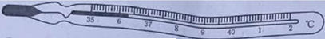
【答案】36.3
【解析】
【详解】由图可知，体温计的分度值是0.1℃，体温计的示数是36.3℃。
22.根据图中的电流方向，可知通电螺线管的______端是N极。
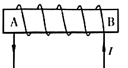
【答案】A
【解析】
【详解】用右手握住螺线管，四指的方向和电流方向相同，那么大拇指所指的A端即为螺线管的N极。
23.如图所示，手持用丝绸摩擦过的玻璃棒，靠近吊起的用毛皮摩擦过的橡胶棒的一端，发现橡胶棒的这端被吸引过来，这是由于______。
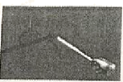
【答案】异种电荷相互吸引
【解析】
【详解】毛皮摩擦过的橡胶棒带负电，丝绸摩擦过的玻璃棒带正电，而两者相互吸引，是由于异种电荷相互吸引。
24.做研究水沸腾的实验时，当水温为8℃时，每隔一分钟记录一次水的温度，水沸腾后持续加热一段时间。利用记录的数据绘制出水的温度随时间变化的关系图线，如图所示。从图像可知，从计时开始，水被加热______min开始沸腾，水的沸点是______。
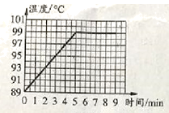
【答案】 (1). 5 (2). 99
【解析】
【详解】[1][2]由图可知，从第5min开始，水温度保持99℃不变，所以从第5min水开始沸腾，并且沸点是99℃。
25.如图所示是研究光的反射规律的实验情境，一束光贴着垂直于平面镜的纸板，从A点射到平面镜上的O点，ON是法线，入射角∠AON=45°。已知纸板上∠NOB=30°，∠NOC=45°，∠NOD= 60°。则入射光线AO的反射光线将沿着图中______方向射出。
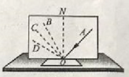
【答案】OC
【解析】
【详解】根据光的反射定律可知，反射角等于入射角，因为入射角AON等于45°，所以反射角也等于45°，已知，∠NOC=45°，则反射角是∠NOC，所以反射光线将沿OC射出。
26.某同学想探究电流通过导体产生的热量与电流、电阻通电时间是否有关。他连接了如图所示的电路进行实验，其中两个完全相同的烧瓶内分别装有质量和初温都相同的煤油，以及阻值为R1和R2的电阻丝（R1<R2）。
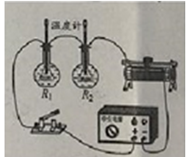
(1)该实验探究的问题是电流通过导体产生的热量与______是否有关；
(2)该实验中，电流通过导体产生热量的多少用______来反映。
【答案】 (1). 电阻 (2). 温度计示数的变化量
【解析】
【详解】(1)[1]该实验两段电阻丝串联，通过电流、通电时间相同，电阻丝的阻值不同，所以探究的是电流通过导体产生的热量与电阻是否有关。
(2)[2]在探究电流通过导体产生的热量与电流、电阻通电时间是否有关的实验中，利用转换法，将电流通过导体产生热量的多少用温度计示数的变化量来反映。
27.如图所示，用隔板将容器分成左、右两部分，隔板下部有一个圆孔用薄橡皮膜封闭。当在容器左、右两部分注入不同深度的水时（水面位置如图中虚线所示），橡皮膜发生了形变，形变情况是向______侧凸起；产生这种现象的原因是______。
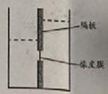
【答案】 (1). 左 (2). 见解析
【解析】
【详解】[1]由图可知，到橡皮膜位置右侧水的深度比左侧水的深度大，橡皮膜向左凸起。
[2]根据p=ρgh，因为水的密度相等，右侧水深度大，所以右侧水对橡皮膜的压强大，根据F=pS，因为受力面积相等，右侧水对橡皮膜的压强大，所以右侧水对橡皮膜的压力大，使得橡皮膜向左侧凸起。
28.测量某种液体密度的主要实验步骤如下
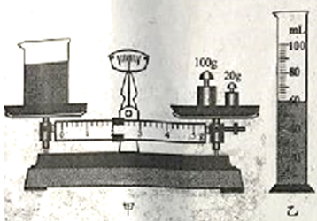
(1)用调节好的天平测量烧杯和液体的总质量，当天平再次平衡时，如图甲所示，烧杯和液体的总质量为______g；
(2)将烧杯中的部分液体倒入量筒中，如图所示，量筒中液体的体积为______cm3；
(3)用天平测出烧杯和杯内剩余液体的总质量为74g；
(4)计算出液体的密度为______g/cm3。
【答案】 (1). 122 (2). 60 (3). 0.8
【解析】
【详解】(1)[1]如图甲所示，天平标尺的分度值为0.2g，游码右端在2g处，则烧杯和液体的总质量
m=100g+20g+2g=122g
(2)[2]如图乙所示，量筒分度值为2mL，液柱上表面在60mL处，则量筒中液体的体积
V=60mL=60cm3
(4)[3]由实验步骤(1)(3)可知倒入量筒中的液体质量为
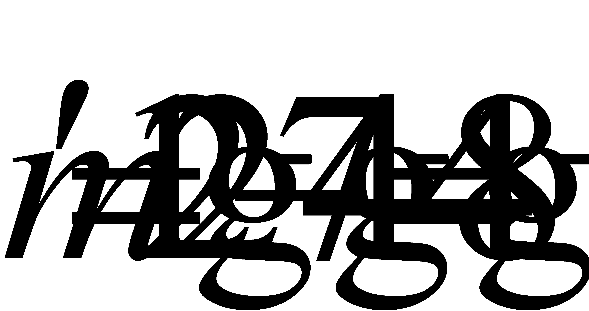
则液体的密度
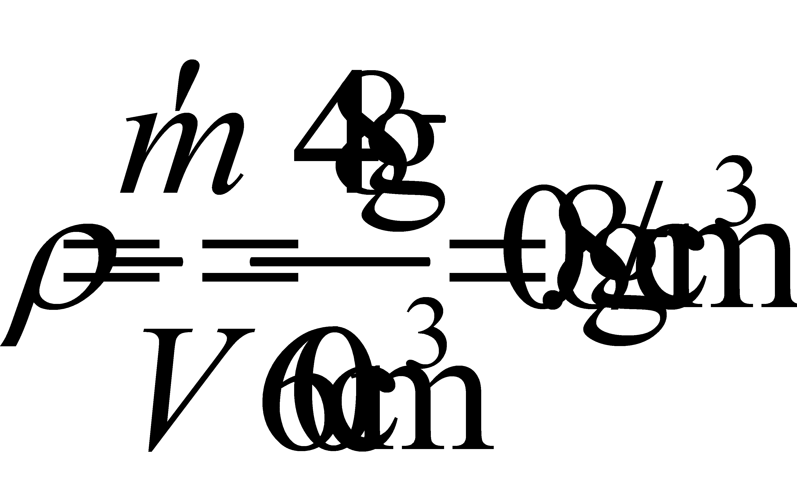
29.某同学利用焦距为y1的凸透镜做了三次实验，透镜、蜡烛、光屏所在位置以及光屏上得到清晰像的情况如图所示。
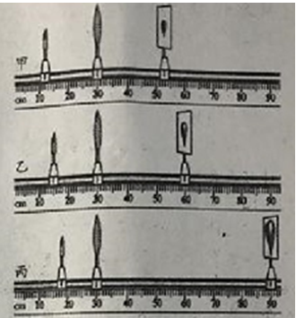
(1)由图所示的实验现象可知：随着物距的不断变小，像距和像的大小变化情况是______；
(2)在图乙所示的实验中，只将凸透镜换为焦距为f1的凸透镜（f1< y1），为在光屏上得到清晰的像，光屏应向______侧移动。
【答案】 (1). 都变大 (2). 左
【解析】
【详解】(1)[1]观察甲、乙、丙三个图的实验现象发现，凸透镜位置不变，蜡烛靠近凸透镜时，即物距缩短，光屏远离凸透镜，即像距变大，且光屏上成的像变大。
(2)[2]由图乙可知成的是倒立、放大的实像，此时物距大于一倍焦距且小于两倍焦距，像距大于两倍焦距，即
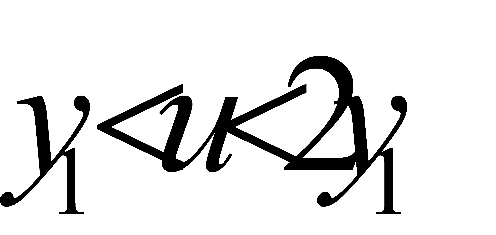
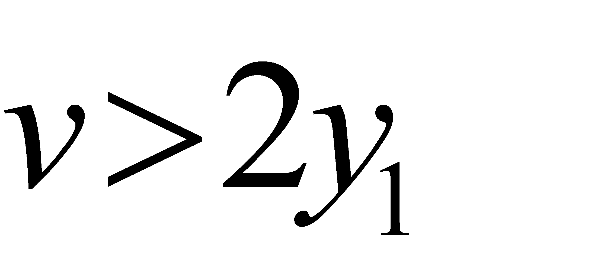
只将凸透镜换为焦距为f1的凸透镜（f1< y1），焦距变小了，相当于物距变大，要想在光屏上得到清晰的像，应该将光屏向左移动。
30.如图甲所示是测量未知电阻Rx的实验电路，电源两端电压不变，定值电阻R0=30Ω。请补充完成主要实验步骤，并进行数据处理。
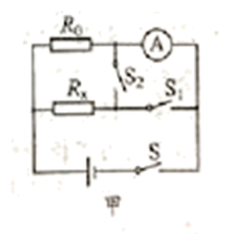
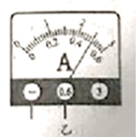
(1)实验步骤
①只闭合开关S、S1，读出并记录电流表示数I1；
②______读出并记录电流表示数I2（如图乙所示）；
③计算Rx的阻值。
(2)数据记录与处理（请你补充完整表中①②位置的数据）
实验数据记录表（定值电阻R0=30Ω）
I1/A | I2/A | Rx/Ω |
0.2 | ①______ | ②______ |
【答案】 (1). 只闭合开关S、S2 (2). 0.5 (3). 20
【解析】
【详解】(1)②[1]只闭合开关S、S1，两个电阻并联，电流表测量通过R0的电流，电流表示数I1；只闭合开关S、S2，两个电阻并联，电流表测量干路中的电流，电流表示数I2。
(2)[2]由图乙可知，电流表的量程是0-0.6A，电流表的分度值是0.02A，电流表的示数是0.5A。
[3]由并联电路电流的规律可知通过Rx的电流
Ix=I2-I1=0.5A-0.2A=0.3A
电源电压
U=U0=I1R0=0.2A×30Ω=6V
Rx的阻值
Rx=
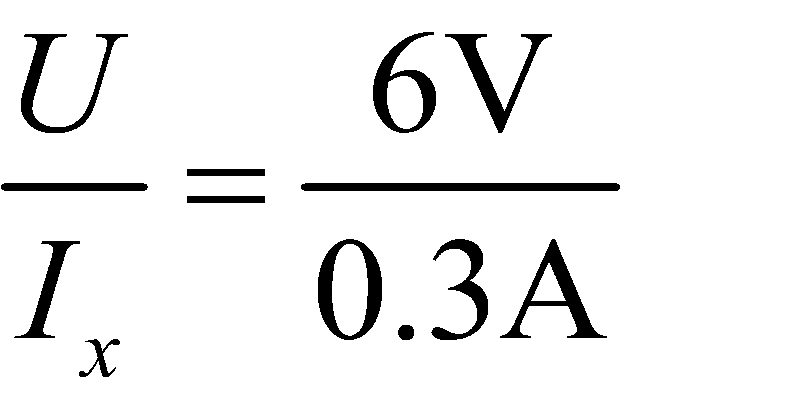
=20Ω31.在其他条件相同的情况下，电阻较小的导体，其材料的导电性能较强。如图所示的电路中，R1是甲种材料制成的电阻丝，R2是乙种材料制成的电阻丝，它们的横截面积相同，长度分别为L1、L2且L1>L2。闭合开关S后，观察到电流表A1的示数I1大于电流表A2的示数I2。请分析并判断甲、乙两种材料导电性能的强弱。
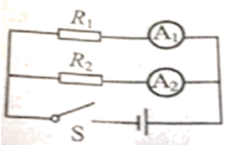
【答案】见解析
【解析】
【详解】根据
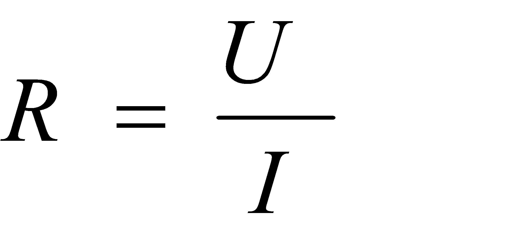
，因为电压相等，通过的电流I1>I2，所以R1<R2；若只是将甲材料制成的电阻丝的长度减小至L2，则其电阻减小为，则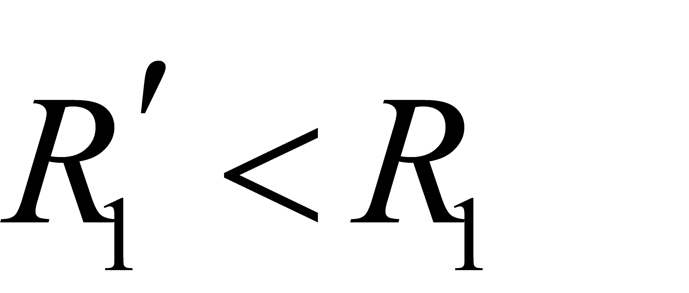
；又因为R1<R2，所以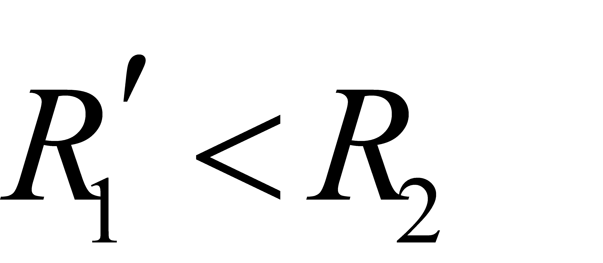
，即当甲、乙同种材料制成的电阻丝的长度和模截面积都相等时，则，所以甲材科的导电性能较强。四、科普阅读题
32.请阅读《科学重器一原子钟》并回答问题。
科学重器一原子钟
星空浩瀚，地球章动，四季更替，草木枯荣。从人类意识觉醒开始，“时间”便如影随形。从太阳升落、日晷、沙漏、水钟、机械钟、石英钟到目前最准确的计时工具原子钟，这些计时方法与工具的发展体现了不同时代劳动人民的智慧计时工具大多是以某种规则运动的周期（完成一次规则运动所用的时间）为基准计时的，比如日晷以日地相对运动的周期为基准；机械摆钟以摆的振荡周期为基准；石英钟以石英晶体有规则的振荡周期为基准。选作时钟基准的运动周期越稳定，测量时间的精准度就越高，基于此科学家制造出了原子钟（如图所示）。它以原子释放能量时发出电磁波的振荡周期为基准，由于电磁波的振荡周期很稳定，使得原子钟的计时精准度可达每百万年才差1秒。
人们通常选取自然界中比较稳定、世界各国都能接受的事物作为测量标准。正是由于原子辐射电磁波振荡周期的高稳定性，适合作为时间的测量标准，于是在1967年，国际计量大会将“1秒”重新定义为铯133原子辐射电磁波荡9192631770个周期的持续时间。时间单位“秒”作为国际通用的测量语言，是人类描述和定义时空的标尺。
虽然制定了统一的时间测量标准，但若各地时间不能同步，也会给人们带来麻烦。比如，若电网调节时间不同步，可能会烧坏电机；金融市场时间不同步，可能会导致巨大的经济损失。这就需要有一个时间基准，用于实现时间的同步，就像日常生活中，我们常常根据电视台播报的时间来校准自己的时间一样。在我国，提供校准时间的是位于西安的国家授时中心的原子钟，它被用作基准钟向电视、广播、网络等提供报时服务。在导航系统中，如果导航定位的精准度为1米，则要求卫星上原子钟的时间同步必须在3×10-9之内，这需要卫星上的原子钟和地面上的基准钟定期校准，以保证定位的精准度。我国自主研制的北斗导航系统中，原子钟堪称“导航卫星的心脏”，使我国在导航精准度方面达到厘米级，处于全球领先水准。北斗导航系统可以给安装了芯片的共享单车设定电子围栏，也可以判断汽车行驶在哪个车道，甚至还可以实现送货的无人机精准地降落在客户的阳台上。计时工具的演变，展现了人类“时间文化”的进程更彰显出人类精益求精、不探索、追求卓越的科学精神。

请根据上述材料，回答下列问题：
(1)原子钟可以作为时间同步的基准钟，依据的是原子辐射电磁波振荡周期的______；
(2)下列物体相比较，最适合提供计时基准的是______；（填写正确选项前的字母）
A.摆动的小球 B.沿直线运动的汽车 C.静止的书本
(3)在实际生活中会出现各种“标准”。请你结合对文中时间“标准”的理解，除文中提到的实例外，再列举一个“标准”______，并说明该“标准”在具体实例中是如何应用的______。
【答案】 (1). 高稳定性 (2). A (3). 见解析 (4). 见解析
【解析】
【详解】(1)[1]由材料可知，原子钟可以作为时间同步的基准钟，由于原子辐射电磁波振荡周期的高稳定性。
(2)[2]由材料可知，以某种规则运动的周期（完成一次规则运动所用的时间）为基准计时。
A．以摆动的小球振荡周期为基准计时，符合题意。
BC．沿直线运动的汽车和静止的书不能完成一次规则的运动，不能作为计时基准，不符合题意。
故选A。
(3)[3][4]实际生活中会出现各种“标准”，比如：1.30m是儿童免费乘坐北京地铁的身高标准，身高低于1.30m的儿童可享受免费乘车待遇，身高不低于1.30m的则不能享受免费乘车待遇。
五、计算题
33.排水量是轮船装满货物时排开水的质量。一艘排水量为2000t的轮船，装满货物在河水中航行。河水密度取1.0×103kg/m3，g取10N/kg。求：
(1)装满货物时，轮船和货物受到的总重力；
(2)轮船排开水的体积。
【答案】(1)2×107N；(2)2000m3
【解析】
【详解】(1)依据阿基米德原理
轮船满载时，在水面漂浮根据浮沉条件
G总=F浮=2×107N
(2)由
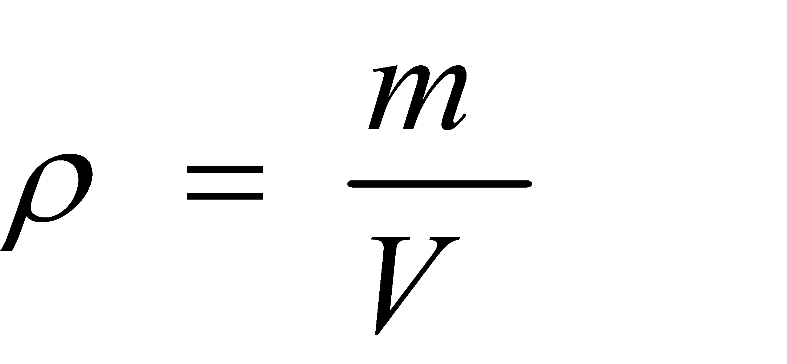
可得排开水的体积 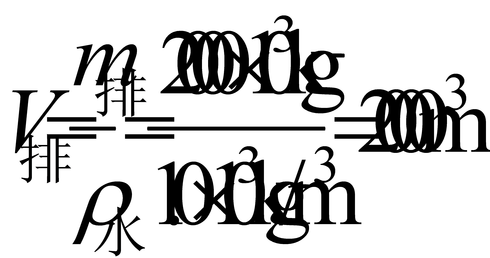
答：(1)装满货物时，轮船和货物受到的总重力是2×107N；
(2)轮船排开水的体积是2000m3。
34.如图所示的电路中，定值电阻R0为10Ω，电源两端电压为3V并保持不变。闭合开关S，调节滑动变阻器RP，使电压表示数为2V。
(1)画出实物电路所对应的电路图；
(2)求RP接入电路的阻值；
(3)求R0的电功率。
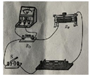
【答案】(1)
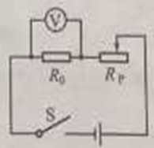
；(2)5Ω；(3)0.4W【解析】
【详解】(1)按照实物图连接画电路图，如图所示
(2)闭合开关S，调节滑动变阻器RP，使电压表示数为2V，则串联电路中的电流
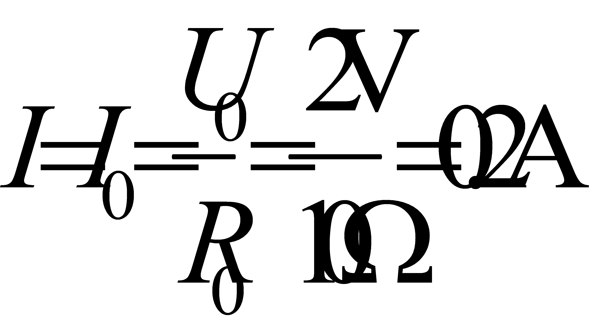
根据串联分压可知RP两端的电压
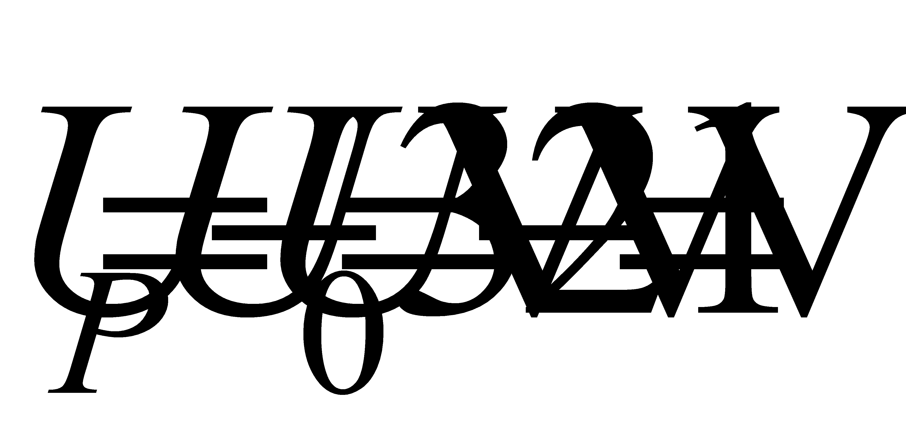
由
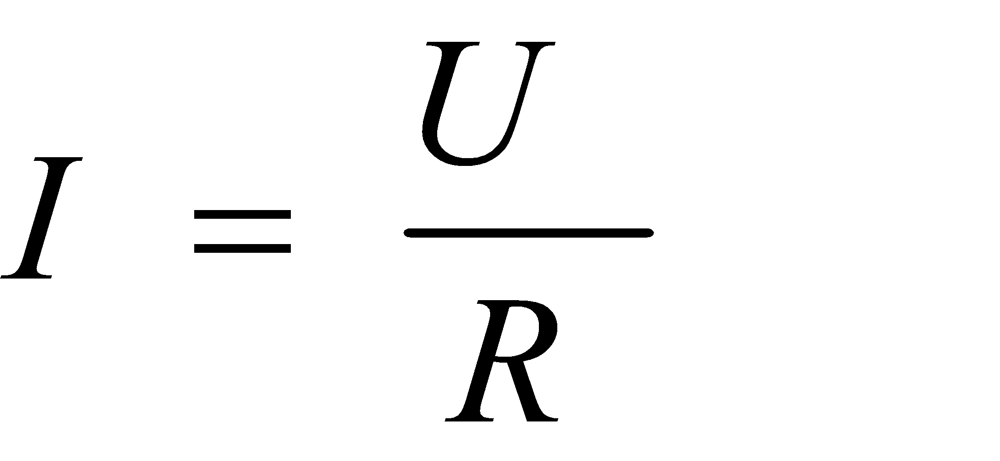
可得RP接入电路的阻值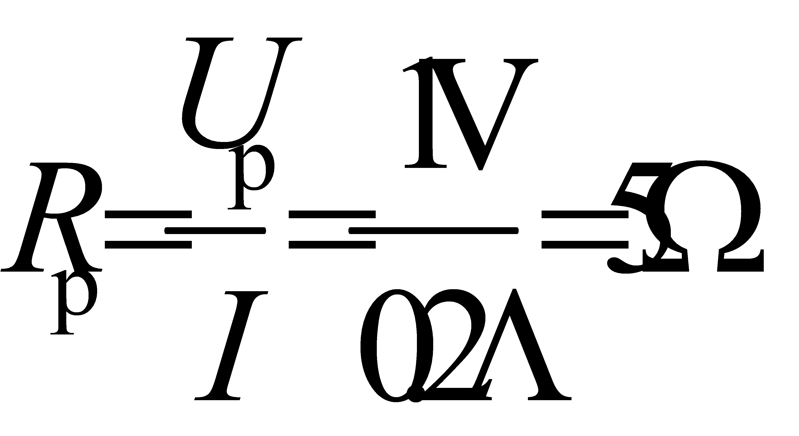
(3)R0的电功率
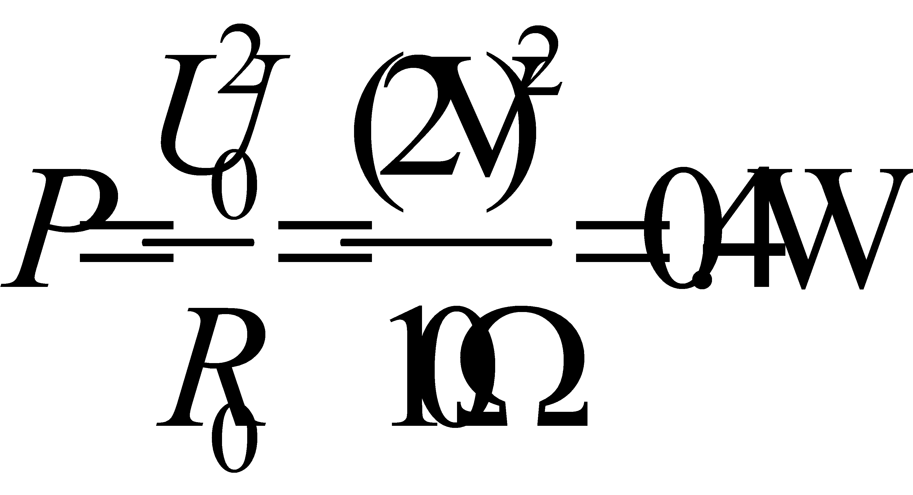
答：(2) RP接入电路的阻值是5Ω；
(3) R0的电功率是0.4W。